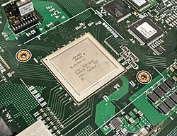
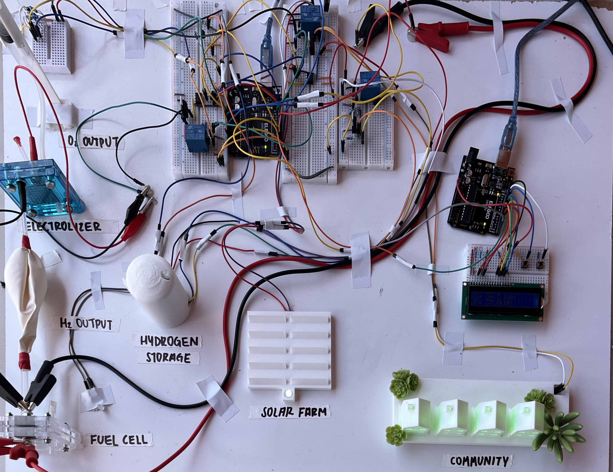
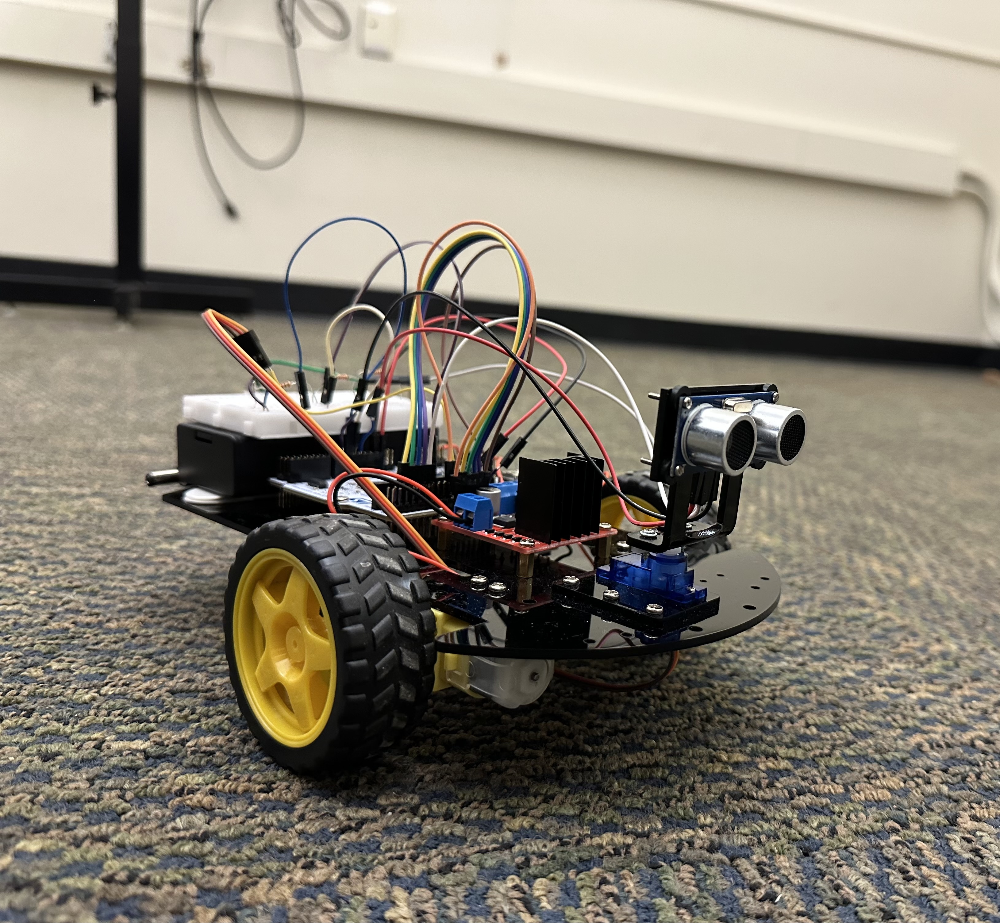
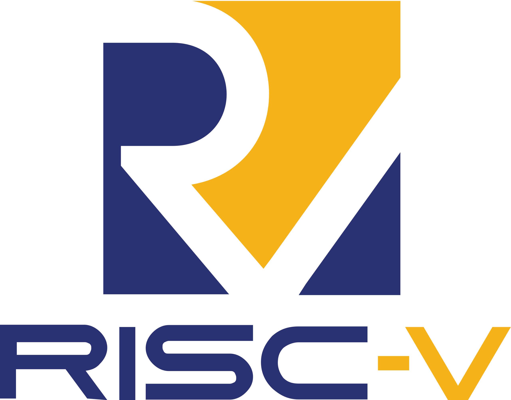
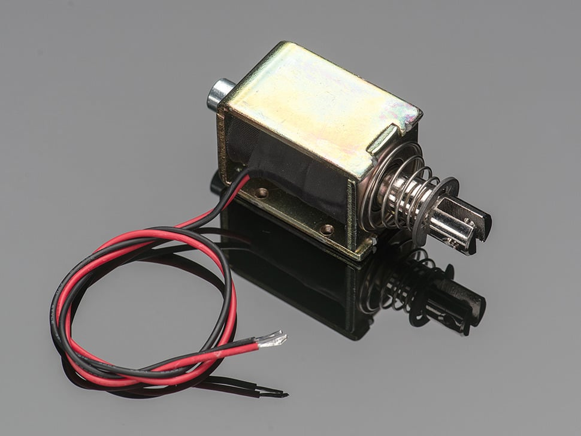
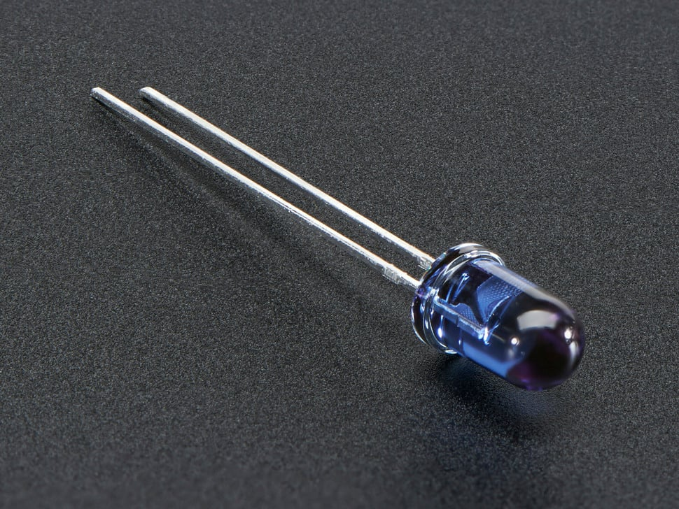

Designed and implemented a Verilog Ethernet switch with MAC learning, forwarding, and broadcasting; integrated DFFRAM and synthesized with Yosys/OpenLane. Built an FSM for multi-cycle MAC parsing, optimized cache lookups, and verified with extensive Verilog and CocoTB tests
Github
Developed a bench-scale implementation for Task 2 of the 2025 NMSU WERC Contest, created a hydrogen-based DERMS solution to firm the grid with solar power and hydrogen fuel cells. My team and I won first place overall for Task 2.
Learn More See IEEE Publication NMSU Article
Developed an autonomous vehicle using STM32L476RGT6, integrated an ultrasonic sensor, motor driver, DC motors, and servo motor for obstacle detection and navigation. Wrote firmware for peripheral communication, path decision-making, and repositioning when necessary.
Designed a Python program to process touch-tone signals, minimize ISI, and optimize filter coefficients to integer values for efficient data communication.

Successfully designed and synthesized a 5-stage pipelined RISC-V MCU with a set-associative cache, implementing key hardware modules like the ALU and interrupts. Wrote and debugged both firmware (for hardware modules) and software (assembly programs) to test CPU functionality and optimize performance.

Designed and implemented a circuit to activate a solenoid based on audio frequency, including SPICE simulations, frequency response testing, and a final whiteboard presentation of the working design.

Designed, tested, and simulated receiver circuits with LTSPICE, using a 555 timer IC and reed switch for frequency modulation in an infrared LED transmitter. Implemented a photodiode, voltage amplifier, and tachometer with AC-coupled comparators on the receiver side, and presented the final design to the professor.
Designed and tested low voltage indicator circuits using LTSPICE, incorporating comparators, op-amps, zener diodes, LEDs, and photodiodes, and presented the final design to the professor.